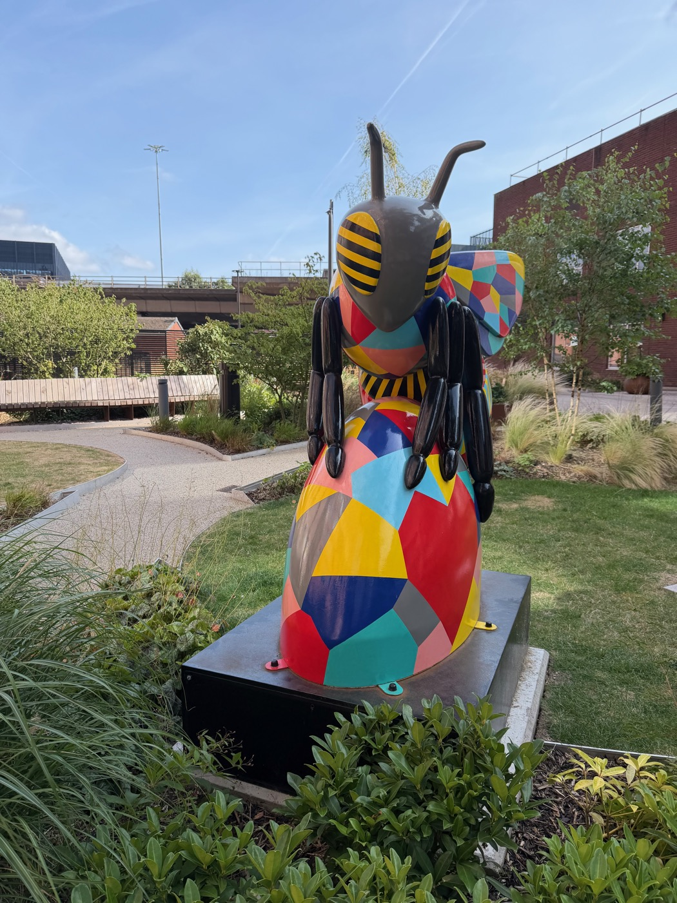
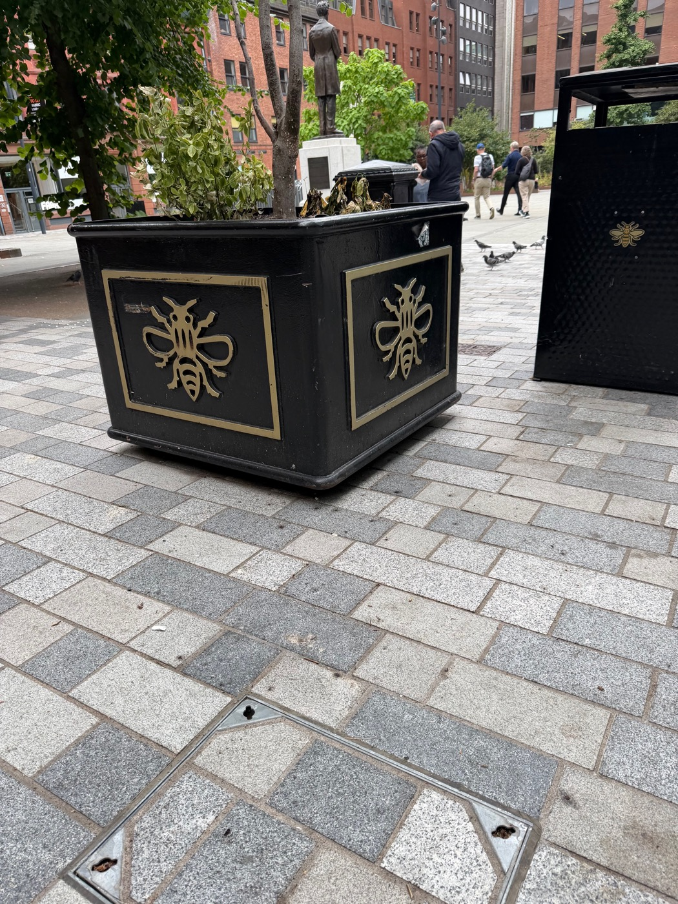
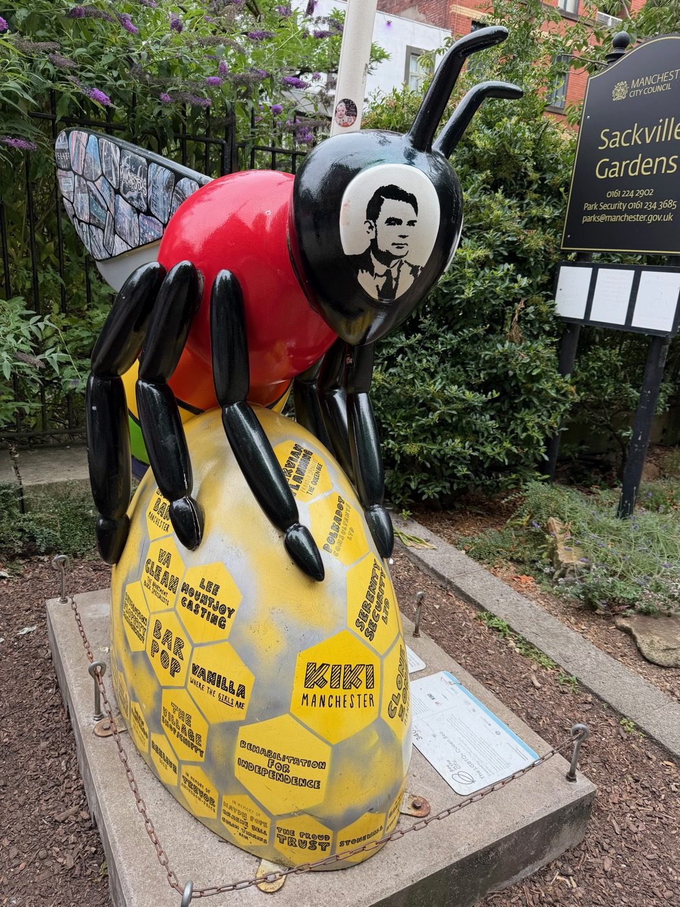
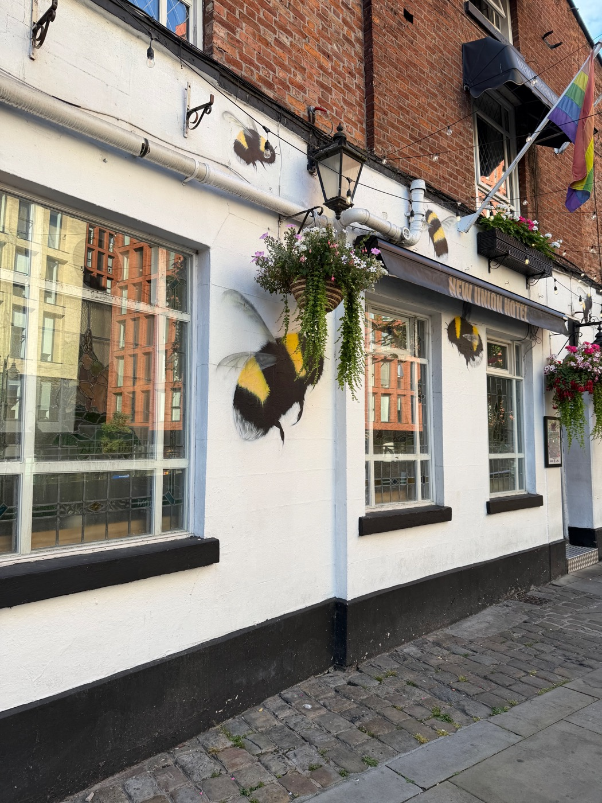
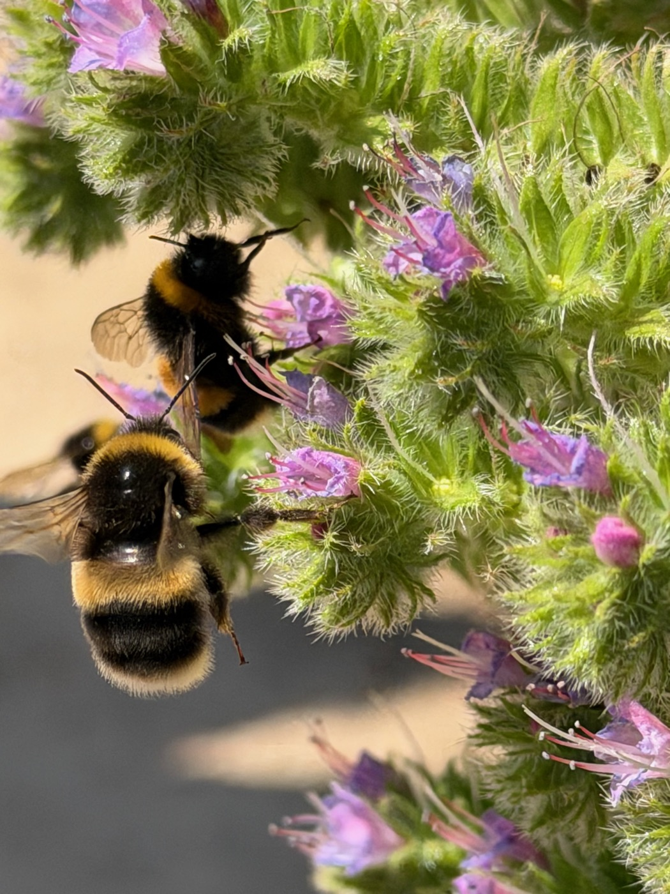

The humans went to Manchester and came back with a field report for the household's entomology division — two senior researchers who take bugs very seriously and have never once caught one.
The finding, in brief: there is a city where the bug won. Manchester took the worker bee as its symbol back in its industrial days — seven bees in the hive of the city's coat of arms — and never let go. The bee is on the bins. The bee is on the bollards. The bee is on the planters, the lamp posts, and a fair number of the people.


The queen of Sackville Gardens
The best one stands in Sackville Gardens, where the city keeps its memorial to Alan Turing. The garden's bee wears his portrait on its head and a honeycomb of community names across its body — a monument wearing a monument. The division was shown this photograph twice and remained calm, which we are taking as approval.


The control group
And then, in the flowers, the real thing — fat, unbothered, entirely uninterested in civic symbolism. The report concludes the way every bug report in this house concludes: highly rated, closely watched, and completely safe from the research staff. Nothing is ever caught. Nothing is ever going to be caught.
